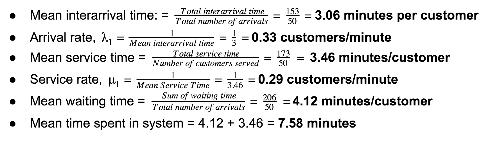
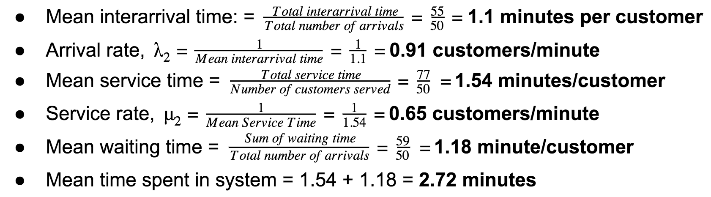

For Cashier

Table 1: Cashier System Performance
For Self Checkout

Table 2: Self Checkout System Performance
Conclusion
It is seen that the performance of the Self-checkout is generally better than that of the Cashier.
1) The mean service time for the Sashier is LONGER than that of the Self checkout.*
2) The mean waiting time for the Cashier is LONGER than that of the Self checkout.
3) The overall time spent in system is significantly LONGER for the Cashier as compared to the Self checkout.
This means that more customers should be directed to the Self checkout servers in the future.
Given that these statistics are based off only 50 entries, we are looking to use our simulation
to verify that the Self Checkout queue indeed results in a lower average queuing
and service time than the Cashier queue in the long run.
* As a result of this, we set the values of the ProbDepartureCashier and ProbDepartureSelfCheckout
slider bars as such in our Java simulation
-- where the ProbDepartureCashier can only take values
lower than ProbDepartureSelfCheckout.